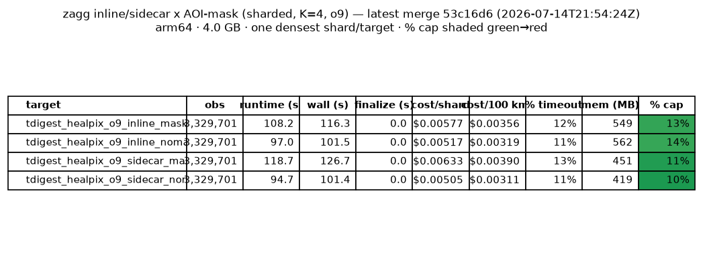
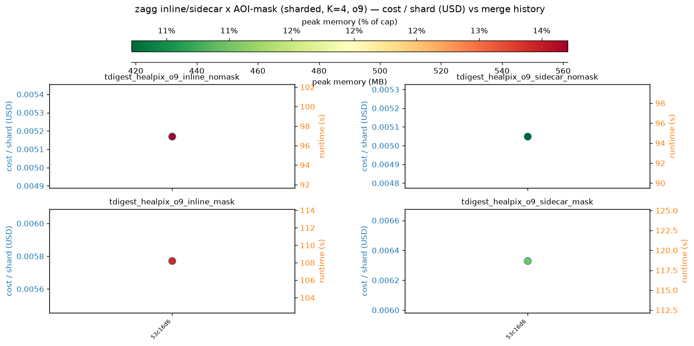
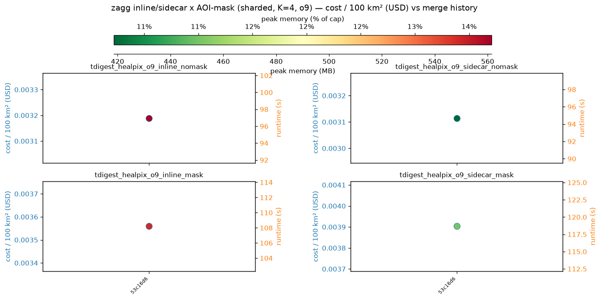
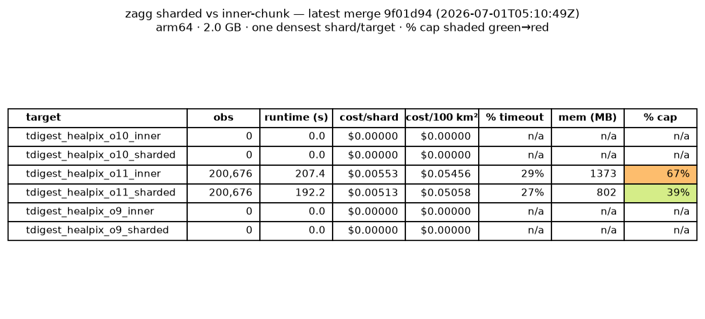
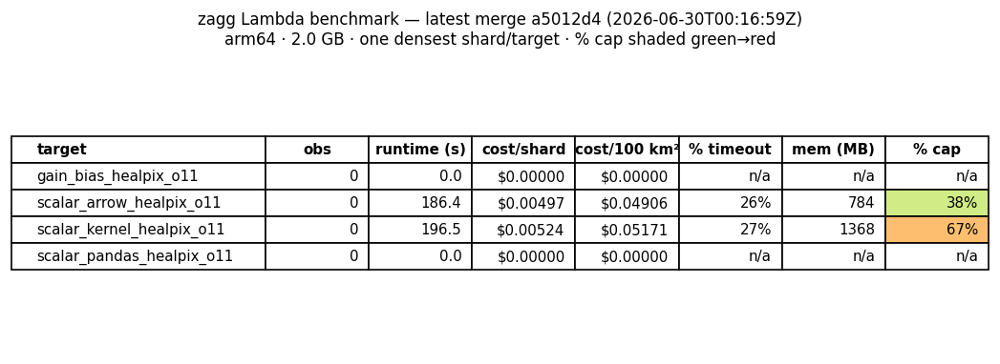
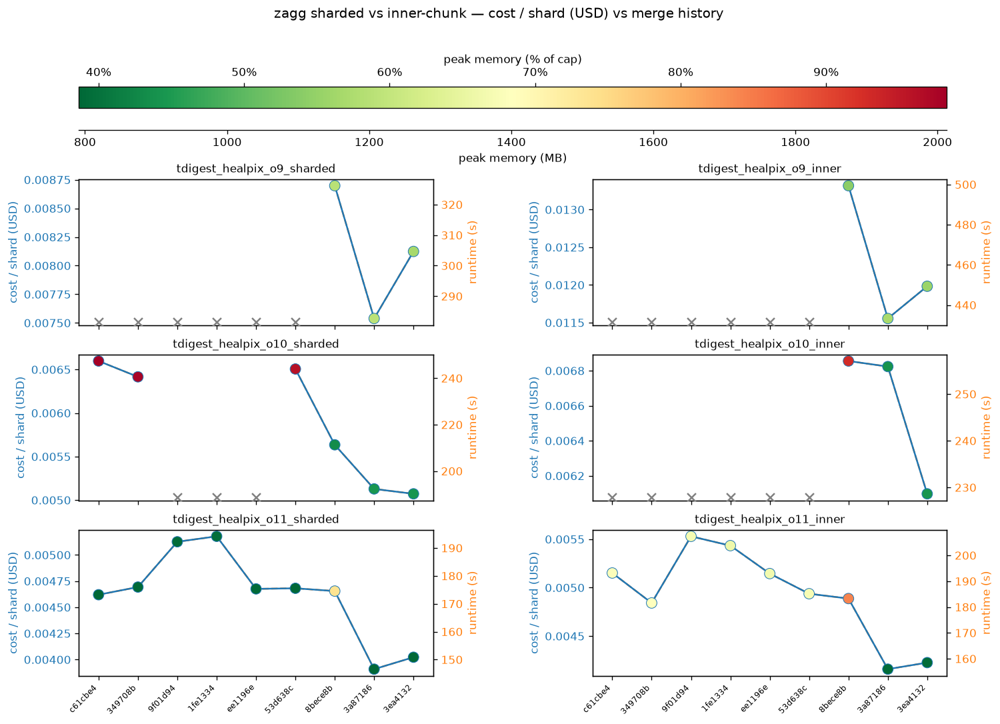
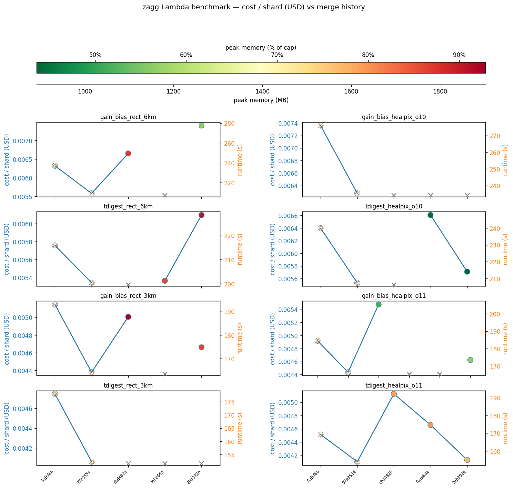
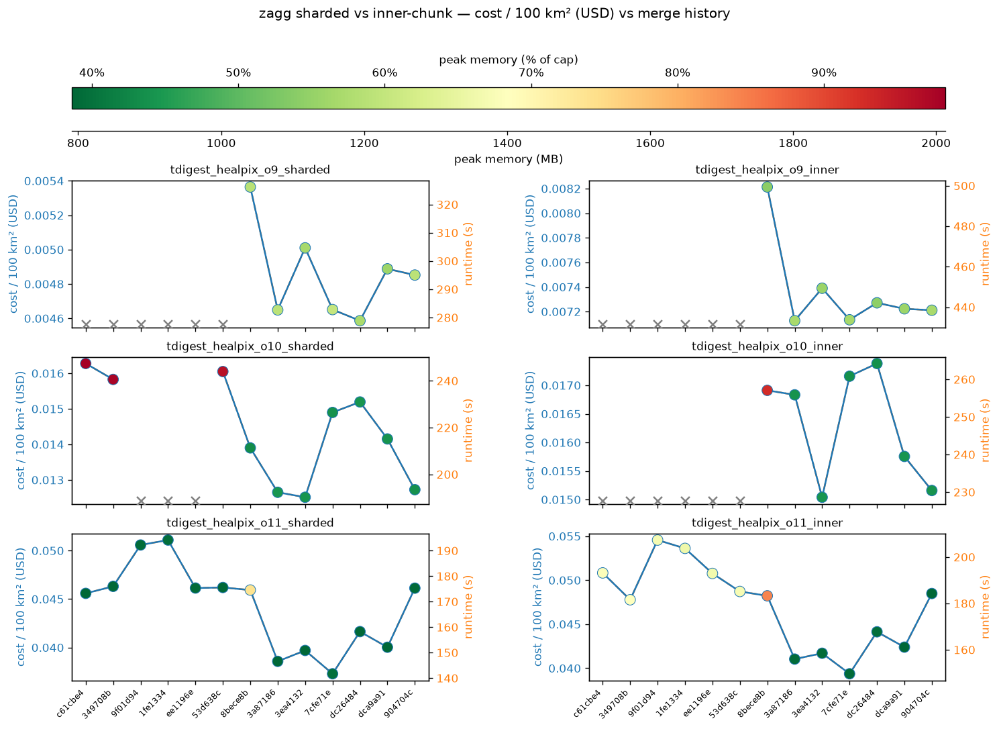
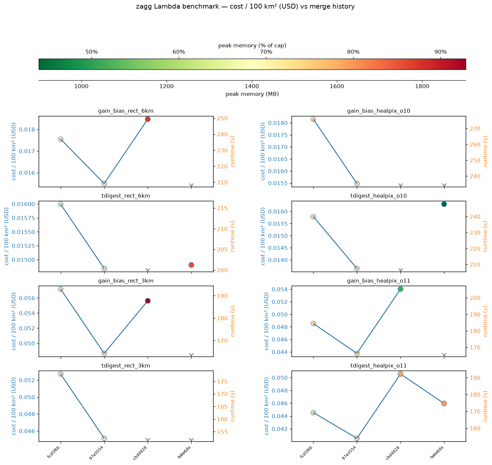

zagg Lambda benchmark
arm64 · 4 GB · one shard/target · densest cell over the NEON SERC AOP box. Each point is a merge to main.
inline/sidecar × AOI-mask (sharded, K=4, o9) — latest merge

Machine-readable: latest.md · metrics.json
cost_per_shard (inline/sidecar × AOI-mask)

cost_per_100km2 (inline/sidecar × AOI-mask)

Archived (frozen as of issues #193 / #202)
The pre-#193 codec (sharded/inner) + historical series and the pre-#202 o10 read-backend rows, retained but no longer updated.
Sharded vs inner-chunk (archived)

Frozen historical (archived)

cost_per_shard (sharded vs inner, archived)

cost_per_shard (frozen, archived)

cost_per_100km2 (sharded vs inner, archived)

cost_per_100km2 (frozen, archived)
